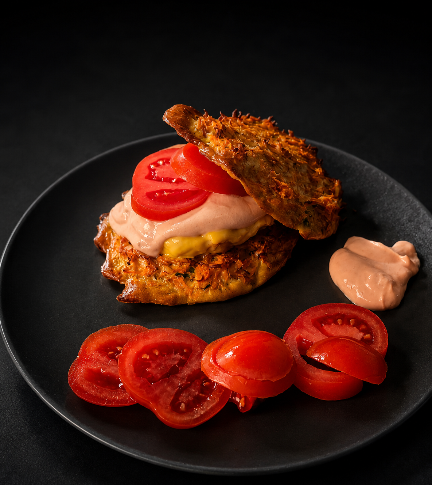

Hamburger avec bun à la carotte

Ingrédients
- 170g de carottes râpées
- 20g de mozzarella
- 10g de ciboulette
- 2 œufs
- 100g de haché de poulet
- 1 tranche de cheddar
- 1 tomate
- 50g de skyr
- 15g de ketchup
Préparation
- Râper les 170g de carottes puis les mélanger avec la mozzarella, la ciboulette et les 2 œufs
- Former 2 buns façon pains burger sur une plaque recouverte de papier cuisson
- Enfourner à 180°C pendant 25 minutes
- Pendant ce temps, cuire le steak de 100g de poulet haché à la poêle
- Préparer la sauce en mélangeant le skyr et le ketchup
- Couper la tomate en rondelles
- En fin de cuisson, déposer la tranche de cheddar sur le steak et couvrir la poêle pour la faire fondre
- Sortir les buns à la carotte du four
- Monter le hamburger avec le bun, la sauce, la tomate et le steak au cheddar
- Servir immédiatement
Valeurs nutritionnelles (approx.)
Par portion : 531 kcal • 47 g protéines • 28 g lipides • 21 g glucides • 6 g fibres